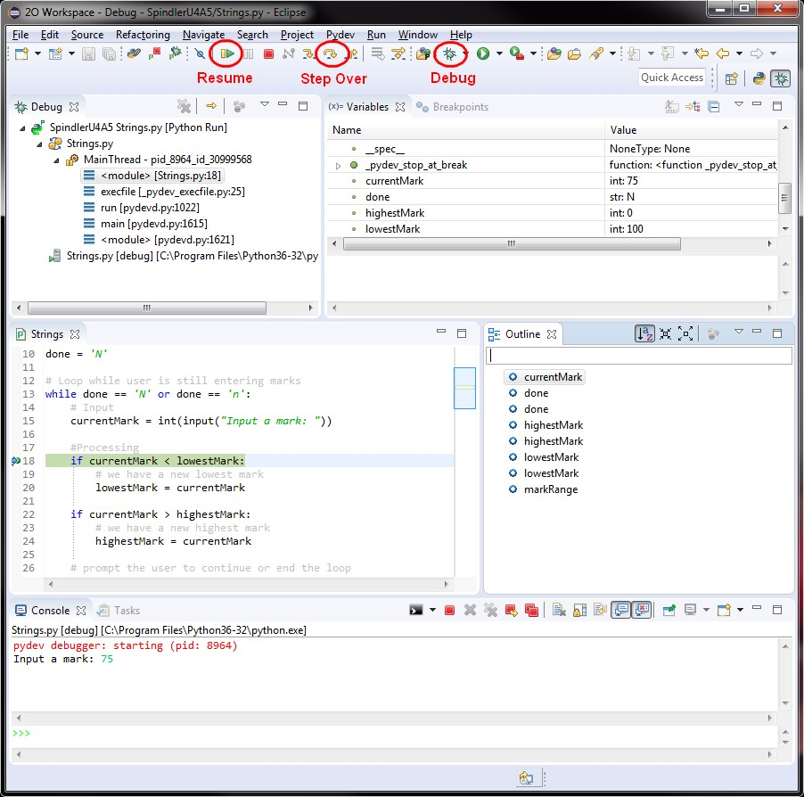

Unit 4: Programming with Python
Activity 1: GitHub and Eclipse
Developer Tools: GitHub and Eclipse
GitHub
Git is a distributed version control system that allows developers to track changes to their code, create backups and share their code in a team environment. GitHub is a web service that hosts Git repositories, plus many developer tools to aid in creating software projects.
We will be using GitHub, GitHub Classroom and EGit (part of the eclipse IDE) during this course to create and share assignment repositories. Each student will have a private repository for the activities and assignment associated with the programming unit as well as their RST.
 |
|
|---|
The Eclipse IDE (Integrated Development Environment)
Eclipse is a program used by many professional programmers, and in many colleges and universities to train people in programming. It was first designed to program Java. It is a very flexible and powerful program that can now be used to program in many different programming languages.It can be used to program in C, C++, C# and other languages as well as Python by adding available modules to the program. Eclipse is free to download and open-source, which means that anyone can view the code used to create it.
|
|
Eclipse is one of many software applications that are to used to develop programs. These applications are called Integrated Development Environments or IDEs. IDEs have a history of their own. Most IDEs contain a text editor to edit the file, a file explorer to organize the source code (the files that contain the programming code) into projects, and various other features that help a developer write programs. Usually IDEs also either connect to or provide a compiler, allow the developer to trace their code one line at a time, and provide context sensitive help. Eclipse provides a number of features that we will explore of the next few pages. |
|---|
If you are on a school computer, follow the directions below for Step 4 ONLY. If there are any issues, tell me immediately.
Step 1: Download & Install Python
- Download Python 3.x from https://www.python.org/downloads/.
- You must select the correct version for your own computer.
- The following steps are what I use, however your computer may be different!
- Right-click on the file and select Run as administrator
- Check the box Add Python 3.x to PATH
- Choose Customize installation
- Under Advanced Options, check Install for all users
- Complete the installation process, taking the default values
Step 2: Download & Install Eclipse
- Visit the Eclipse Installer page and follow the steps provided.
- Make sure you select the version that is appropriate for your computer
- When prompted, choose Eclipse IDE for Java Developers (this is the most 'basic' version - we will add the python plug-in later)
Once Eclipse has started the first time it will look like the following:
Step 3: Install PyDev
Finally, to program with the Python language in Eclipse, you will need the PyDev plug-in.
To install Pydev:
- In Eclipse, select Help ... Eclipse Marketplace from the top menu Select
- Search for "Pydev"
- Click install and follow the installation instructions.
Step 4: Configure the Interpreter
Once Pydev has installed, you must configure the interpreter:
- In Eclipse, select Window ... Preferences from the top menu
- Navigate to PyDev -> Interpreters -> Python Interpreter
- Click the button Quick Auto-Config, or (newer version) New - Choose from list, then click OK
- If the interpreter is not found, you will need to search for it manually. The default located for installation may be something like C:\Users\*******\AppData\Local\Programs\Python\Python39
- See me for help if you run into issues here!
Programming in Eclipse requires that you create a project, and within the project create a Python module, within a package (like a folder). The module file will open when you create it and you will then be able to type your commands for your Python programs.
All the programming exercises in this unit will be completed in the same project, organized into packages for each activity
The Eclipse Workbench
The Eclipse Workbench consists of three main components: Perspectives, Views and Editors
- Perspectives
- A group of views and editors
- Multiple perspectives can exists in a single Workbench Window
- You can customize a perspective to your workflow needs, or reset it back to its default layout
- Can be chosen from the buttons at the top right of your screen (text optional):
- We will be using the following perspectives in this course:
- Pydev (for creating and editing code)
- Debug (for tracing and debugging code)
- Git (for working with your GitHub repository)
- Each perspective has its own toolbar, that you can customize to your needs (right click on the perspective button & select customize ...)
- Views
- A visual component within the Workbench
- Used to navigate a list or hierarchy of information, or display properties for the active editor
- Each perspective has a set of views it includes by default, but you can always add your own!
- Select Window > Show View and choose the view you want to add to your perspective
- You can move the views around as needed on your screen by dragging & dropping the view tab
- Some of the views that we will be using:
- Package Explorer: To organize your projects, packages & modules
- Console: To provide user input & view program output
- Git Repositories: To clone and manage your assignment repositories
- Git Staging: To stage, commit & push your source code files to your Git repository
- History: To view your history of commits
- Variables: While debugging, view the contents of your program variables as you step through your code
- Editors
- Allows you to view & edit source code files (*.py), text files (*.txt), html files, or any other standard Unicode/ASCII file.
- Can have multiple editors open at one; you will see tabs with the filename for each
- A star (*) means that the contents of the editor has been changed, but not saved
- ctrl-s saves the content of the current editor, ctrl+shift+s saves the contents of all editors
Git Repositories
The following image shows the various commands that you will need to work with GIT for your activities and assignments:
The most important actions are clone/import, pull, and commit/push.
Clone/Import
To clone a repository means to create a local copy of the remote repository (hosted on GitHub) onto your local computer. This creates both the local repository (which tracks changes) as well as the working directory that contains your files. Once this is done you can import your project into Eclipse.
Cloning/Importing involves these steps:
- Obtain the URL for your repository from the GitHub website and copy it to the clipboard.
- In Eclipse, select File ... Import
- Select Git ... Projects from Git
- Choose Clone URI
- The next screen should already be populated with your repository information. Enter your GitHub username and password in the Authentication area. Select Store in Secure Store (when prompted, choose no for creating recovery questions)
- In the "Branch Selection" screen, clear the checkbox for the feedback branch. One the master branch should be selected.
- In the "Local Destination" screen, you can accept the default directory
- Under "Wizard for project import", choose Import existing Eclipse projects
- Click Finish
- Once your project has imported completely, rename your project (F2 or right click Refactor ... Rename) to include your last name (Format: Lastname_ICS2O_Unit4 ).
- Click HERE for a step by step video of the clone/import process.
Once your have completed these steps, you should have a copy of the project stored on your computer. You will need to complete this process for every computer that you will use for this course.
Commit/Push
Once you have made some changes to your project, you will want to add those changes to your remote repository. This serves as a backup of your work, allows your teacher to view and assess your work, and gives you the freedom to work from multiple computers. This process involves 3 steps: staging, committing, and pushing.
- To stage your work means that you are preparing to put your changes to the local repository.
- This can be done using the Git Staging view, found in the Git perspective.
- Once your files have been modified, they should appear in the "Unstaged Changes" window.
- Add your files to the index (or Staged Changes list) by dragging and dropping, using the green plus signs, or right click and select Add to Index
- Once your changes have been staged, they are ready to be committed (to the local repository) and pushed (to the remote repository).
- You MUST include a commit message every time you commit!
- If you can't think of a message, ask yourself "Why is it important that I commit right now?"
- Once your comment is entered, select Commit and Push ...
- You MUST include a commit message every time you commit!
- Keep in mind that Commit writes your changes to your local repository, while Push writes the changes to the remote repository (GitHub). For now, we will do both actions together.
- If you accidentally click the wrong button, you can always issue a push command by right-clicking on your repository in the Git Repositories view and selecting Push from the context menu.
- Click HERE for a step by step video of the commit/push process.
Pull
When you switch between computers (home and school) it is CRITICAL that every coding session begin with a "Pull" command. This ensures you are always working on the latest version of your code.
- To issue a pull command, in the Git Repositories view, right click on your repository and select Pull from the context menu
- Click HERE for a step by step video of the pull process
Programming errors
While working through the CSCircles activities, you likely encountered a number of different errors: times when you thought that your instructions would be well understood by the computer, only to find out that they were not. In general, there are 3 types of programming errors:
|
Debugging comic
|
1) Syntax: Syntax is the 'grammar' of the interpreter or compiler. Usually Eclipse catches these errors and your program will not run with these errors present. Missing brackets, improper indentation, not enough or too many arguments being passed to a function - these are all examples of syntax errors. Syntax errors are relatively easy to fix, since most IDEs aid you in finding and correcting them. 2) Run-time: run time errors happen when the program is running, but something goes wrong and the computer is not prepared for it. A common example in Python is accepting a user's input in a math calculation without converting the input to an int or float. Another example would be allowing the user to enter a number that is used as a divisor for a division problem, and the user enters 0. Since division by zero is undefined, this would result in a run-time error. In Eclipse, run time errors cause a "Traceback", which appears in red text in the console, which proves information to help you locate which line of code cause the error to happen. 3) Logical: Logical errors are the most difficult to find and fix; they happen when the code runs with no issues, only the results are not what they should be. Careful testing of a variety of inputs will help to reveal logical errors, and a good debugging environment will help to locate what part of the code is causing them. |
|---|
|
Eclipse offers a perspective that is helpful for finding logical errors, called the "Debug" perspective. To open the debug perspective, click the "Open Perspective" toolbar button at the upper right corner of Eclipse.
A dialog box with a list of available perspectives will open; |
Open Perspective
|
|---|
When the Debug perspective opens, it should resemble this:
Notice that the screen is now divided into five different sections. The most important one is the "Variables" window in the upper right corner. This will allow you to view the contents of all the variables in your program, as it is running.
Since computers run so quickly, we need to slow down the program execution to allow us to view the contents of our variables, and to observe the flow of our code. One way to accomplish this is by using a breakpoint, which signals to the interpreter that code execution should stop at this point, and give the programmer the option of 'stepping' through the code, one line at a time.
To place a breakpoint in a program, find an executable line of code (not a comment or a whitespace line) and select Run -> Toggle Breakpoint. A circle should appear to the left of that line of code.
Instead of clicking the run button, click the debug button just beside it: . When your program reaches the line with the breakpoint, the program will pause. You will be able to view the contents of your variables, and then either resume your code (run it again, until it reaches another breakpoint) or step through one line at a time.
Here is a screenshot of a program in the middle of execution:

The exercises in this unit can get complicated, and may require you to use the debug perspective to help find and resolve logical errors. Let me know if you run into any problems using this! Once you are done debugging, you can return to the pydev perspective by clicking the python logo in the upper right corner of your screen.
The first program you will create is the Hello World program. This is a simple, one-line program that prints the message "Hello World!" to the screen.
Evidence of Learning
 Step by Step
Step by Step
Now it's time to create your first Java Application! Follow these instructions carefully:
- Create a FREE account on GitHub.com and activate the account (they will send you an email with an activation link!)
- Follow the link on the Activity 1 Evidence Card to create your Unit 4 Repository. When prompted, give GitHub Classroom permissions on your repository.
- Open Eclipse from the start menu (search bar), task bar, or desktop. If you don't have Eclipse installed, review the steps outlined above
- Once you start Eclipse, the program will ask you to create a workspace.
- Create the workspace in the default location, or a location of your choosing.
- Open the Pydev Perspective. You may need to install it from the Eclipse Marketplace
- Clone/Import your Unit 4 repository, following the steps outlined above.
- Don't forget to rename your project!
- You will need to repeat this step for each computer that you use (home/school)
- Inside this project, navigate to the activity1 package
- Inside this package, create a new Pydev Module (File > New > PyDev Module)
- Create a simple Hello World program, as show by your teacher.
- Save
 & run your program to ensure it works!
& run your program to ensure it works!
- Open the Git perspective to stage your changes, commit and push to your remote repository, following the steps outlined above.
- Verify on GitHub.com that your new code is there!
- When you get home (or back to school), don't forget to Pull any new changes into your local repository, following the steps outlined above.